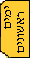

<HTML>
<HEAD>
<TITLE>train</TITLE>
</HEAD>
<script language=javascript>
function opentree()
{
window.open('tree.html','','scrollbars=yes,resizable=yes,width=250,height=360')
}
</script>
<body bgcolor="#FFFFDC">
<!-- write the upper tabs -->
<script language="javascript">
parent.left.document.open()
parent.left.document.write('<html><head><base target="content"><title></title></head><body><p align="right">') // header
parent.left.document.write('<a href="mailto:sarib@macam98.ac.il"></a>')
parent.left.document.write('<a href="http://www.diburim.co.il/cgi-bin/forums/intraforum.cgi?forum=b-2400"></a>')
parent.left.document.write('<a href="practice.html"></a>')
parent.left.document.write('<a href="subjects.html"></a>')
parent.left.document.write('<a href="livre.html"></a>')
parent.left.document.write('<a href="time1.html"></a>')
parent.left.document.write('<a href="javascript:opentree()"></a>')
parent.left.document.write('<a href="shalom.html">')
parent.left.document.write('')
parent.left.document.write('</p></body></html>') // spacer+footer
parent.left.document.close()

</script>

<!-- write the left tabs -->
<script language="javascript">
parent.mleft.document.open()
parent.mleft.document.write('<html><head><base target="content"></head><body><p>') // header
parent.mleft.document.write('<a href="practice.html"></a>')
parent.mleft.document.write('<a href="time2.html"></a>')
parent.mleft.document.write('<a href="firstday.html"></a>')
parent.mleft.document.write('<a href="incubate.html"></a>')
parent.mleft.document.write('<a href="train.html"></a>')
parent.mleft.document.write('')
parent.mleft.document.write('')
parent.mleft.document.write('</p></body></html>') // footer
parent.mleft.document.close()
</script>
<nobr>
<div align=right><a href="practice.html">

התנסות בהוראה<br>

  </a>
</div>
<div align=center><nobr>
<b>
התנסות בהוראה - הדרכה והערכה</b><br>
</div>
<div align=right>

שימו לב - חג מתקרב<br>

<br>

.התקרבותם של חגים מאפשרת לנו הזדמנויות חינוכיות לעיסוק בערכים הקשורים בנושאי החג<br>
 ,על מנת להעזר בפעילויות, ללמוד עוד, ולדון בקהילית חינוך מורחבת בנושאים הקשורים לחגים<br>

.לפניכן רשימת אתרים העוסקים בחגים המתקרבים. הרשימה תתעדכן לעתים מזומנות<br>

<br>

<br>

<a href="http://www.education.gov.il/moe/hagut">

אתר משרד החינוך<br>
</a><a href="http://www.galim.org.il/frameknowledge.html">

אתר סנונית - חגים שונים<br>

</a>
  <a href="http://www.chabad.org.il/eyun/chagim/chanuka/chanuka.htm">

אתר עיון מסורתי של חב"ד<br>
  </a><a href="http://www.bluemountain.com/eng/hanukkah/index.html">

(כרטיסי ברכה לחגים שונים)כולל נוצריים ומוסלמים<br>
  </a><a href="http://gifted.snunit.k12.il/activities/light/.index.html">

הבטים שונים בנושא האור<br>
  </a><a href="http://www.joi.org/celebrate/hanuk/activ.htm">פעילויות שונות לחנוכה<br>

  </a><a href="http://bitband.com/jmusic/hanuka.htm">שירים</a>

<br>

  <a href="http://www.education.gov.il/toranit/hanuka_index.htm">

אתר ללומד המבוגר<br>

  </a>

<br>

  <p><nobr>

<br>
 אין פעילות מושכלת שאין איתה הערכה. ההערכה בהתנסות בהוראה היא הערכה<br>
 מעצבת המתבססת על דיאלוג בין הסטודנטית, המורה המאמנת, חברות וצוות<br>

.והמדריכה הפדגוגית<br>

.בסוף הסמסטר תינתן הערכה מסכמת<br>
 .על מנת לבנות את הדיאלוג לצורך ההערכה, יש להשתמש במיומנויות רפלקטיביות<br>
 לכן, במהלך ההתנסות בהוראה תתנסי בחשיבה רפלקטיבית אודות עבודתך. תוכלי<br>
 .להעזר לשם כך בקבלת משוב מהמורה המאמנת ומחברותיך, ובמתן משוב לאחרים<br>
 בסוף כל שיעור צפייה, נתנסה ביחד, במתן המשוב על ידי המדריכה. בנוסף, כדי לפתח<br>

.חשיבה רפלקטיבית נתנסה בסדנה לניתוח אירועים מהשדה<br>

:המשוב וההערכה יתבססו על >a/<הקריטריונים >"lmth.terc"=ferh a< הבאים<br>

<br>
 לפניכן תאריכי השיעורים לצפייה במהלך הסמסטר הראשון. בתאריכים עלולים לחול<br>

.שינויים<br>

:שימו לב >"04"=thgieh "04"=htdiw "fig.traeh"=crs "0"=redrob gmi< והקפידו להתעדכן

</nobr>

  <p>חט"ב קציר&nbsp;&nbsp;&nbsp;&nbsp;	 28.2<br>

גן הסלעים&nbsp;&nbsp;&nbsp;&nbsp;&nbsp;&nbsp;	2.3<br>
  &#11;חט"ב עידנים, גן חלמית&nbsp;&nbsp;&nbsp;&nbsp;&nbsp;&nbsp;	7.3<br>
  &#11;בי"ס אלון&nbsp;&nbsp;&nbsp;&nbsp;	14.3<br>

גני וינגייט&nbsp;&nbsp;&nbsp;&nbsp;	16.3<br>

<br>

  <br>

<br>

<p><br><center><font size="2">Sari Bar On 1999 - All Rights Reserved</font></center>
</body>
</html> 
